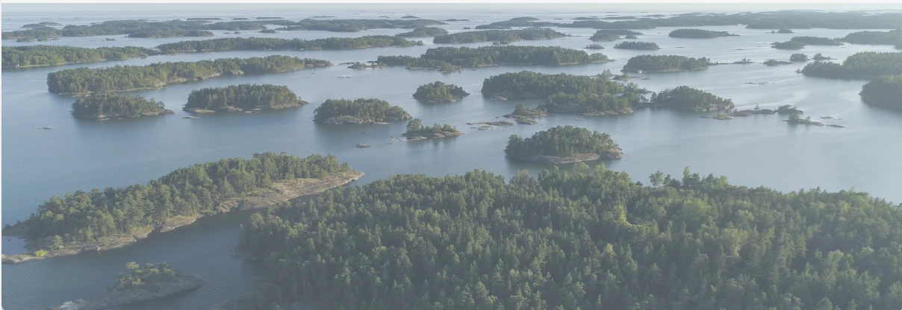

The Archipelago
The two backing panels echo the islands of the Finnish archipelago. Their rippled surfaces and sweeping edges recall the wake left by a ship crossing the water.

The two backing panels echo the islands of the Finnish archipelago. Their rippled surfaces and sweeping edges recall the wake left by a ship crossing the water.
